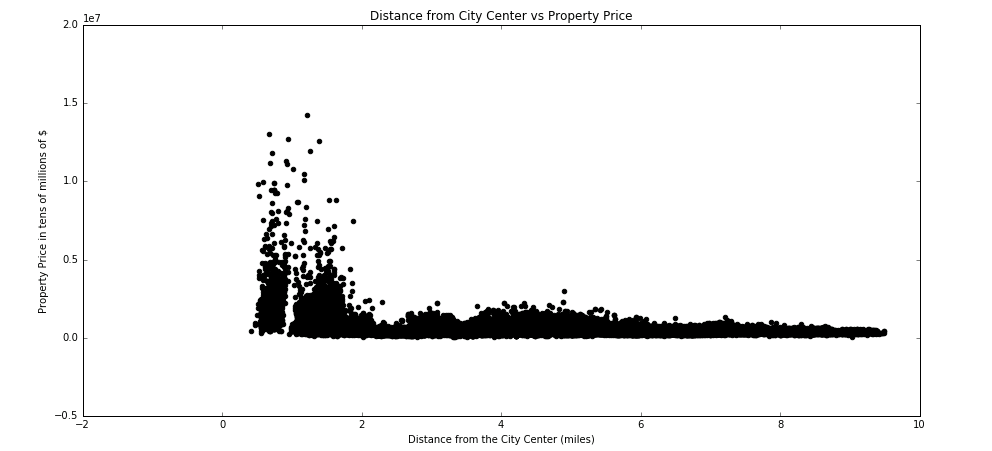
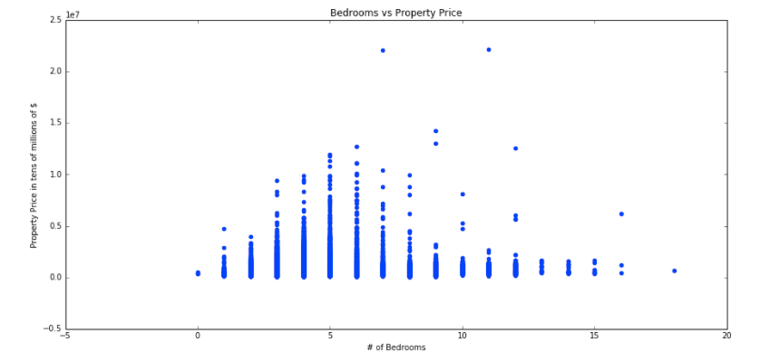

Project Overview
Motivation
Today, residential real estate private equity and brokerage firms rely on outdated and inefficient tools for valuing their assets. A junior analyst must manually build an Excel model that takes into account several different factors such as the location, the square footage, etc. and then make assumptions about their impact on the pricing of the property. He or she oftentimes will look at comparable properties or “comps” to try to understand how similar properties are priced. Although such estimates and assumptions are commonly accepted in the industry, there is a large degree of subjectivity in building these models and choosing comps. Incorrect models can lead to real estate private equity firms buying properties at prices that are higher than their intrinsic value which handicaps value to provide returns for their clients e.g. endowments, pension funds, and so on.
The proliferation of datasets on property characteristics through county websites provides promise for an approach that is more rigorous than the assumptions made by a human analyst. We propose a new data science approach that provides a model that real estate private equity firms can use to predict the value of a residential property in Boston.
Objectives
Through this project, we sought to answer three primary questions:
- Which features of a home are linked to the intrinsic value of a home?
- Can we integrate those features into a predictive algorithm that would predict the intrinsic value of a property
- What form should that algorithm take?
Approach
We began our study by scraping a dataset from the City of Boston Assessing Department which is responsible for providing the current value and tax status of properties in the Boston area. The dataset included 169,199 properties and had 77 features. Some features were land and living square footage, number of rooms (bedrooms and bathrooms), building style, year built, and year of latest remodel. We cleaned the data by removing properties with appraisal prices of zero dollars, removed outliers that were likewise illogical (e.g. the year built is 0), and performed one-hot encoding to convert qualitative into quantitative data. Then, we performed several exploratory analyses with the goal of understanding how different variables were associated with one another. The information collected during the data exploration was used to inform the construction of the three predictive models: one using linear regression, one using lasso, and using ridge.
Analysis
Data Overview
This table shows a summary of several key variables we incorporated into our model. The appraised value is highly varied and spread out, the mean appraised value is $580,000 and the standard deviation is $481,000. The median is $430,000, which implies the data is right skewed.
Latitude and Longitude
From the graph, it seems that expensive properties are located within certain regions of greater Boston as evidenced by the tall peak.
Similar to the latitude graph, it seems that expensive properties are located within certain regions of the greater Boston area as evidenced by the tall peak.
Distance
This graph reveals how the distance the property is from the city center correlates with price. As expected, there are a large number of very expensive properties located right in the center of Boston, close to areas such as the financial district. As we go even 2 miles out from the city center to more suburban areas, prices drop substantially. The slight bump in prices at around 4 miles from the city center refers to suburbs such as Cambridge and Brookline which are generally more expensive places to live.
Bedrooms, Bathrooms, Living Space
The distribution of the number of bedrooms vs. property price is roughly normal. The majority of the properties have between 1 - 8 bedrooms with a sharp decline afterwards in the number of properties with 9+ bedrooms. There are a couple properties with high prices and 7 and 11 bedrooms respectively and those are properties that command a premium price due to their location. Some of the other properties that don’t fit the trend are also located in ideal locations which drive up their price.
The distribution of the number of bathrooms in a home vs. property price could be normal or left skew since the frequency of homes seems to drop off after 6 bathrooms. The vast majority of homes have between 1 - 6 bathrooms. The maximum of the appraised value for each number of bathrooms increases as the number of bathrooms increases. There is less of a pattern for homes with 7-9 bathrooms along with a very large property with 12 bathrooms, but it was not eliminated since it does not qualify as an outlier.
Property value is linearly related to the amount of living space available as evidenced by the relatively straight, positive scatter plot. This makes sense since the value of the home should increase as it gets bigger.
Prediction
Below is a table indicating the prediction accuracy of the various models we built along the way.
As this table indicates, our process went from a baseline model with an R2 of 0.18 to a more sophisticated tuned ridge regression model with an R2 of 0.46, to ultimately a tuned lasso model with an R2 of 0.48. Along the way, we tried out every model learned in the class, most of which did not work on our data or produced worse results. Our final model also had an average residual of $187,500, which is comparable to the best models in literature. In our initial model, we had multiple features, namely gross area and land square footage. However, these variables correlated significantly with living space (very positive linear relationship) and as a result we removed them from our dataset. The 5 final features we ended up using were: living space, number of bedrooms, number of bathrooms, latitude, longitude, and distance from the city center.
Conclusion
In sum, we were able to build a new model for real estate private equity valuation that proves to be much more efficient and just as accurate as the best models used in industry and literature today. This is a promising first step in the new age of using machine learning and computational tools to make financial analyis better.